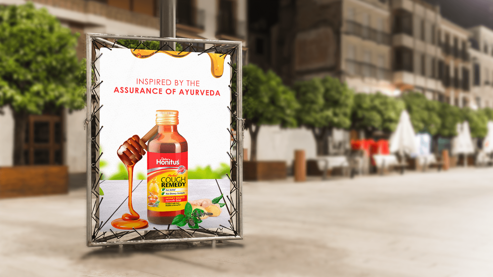
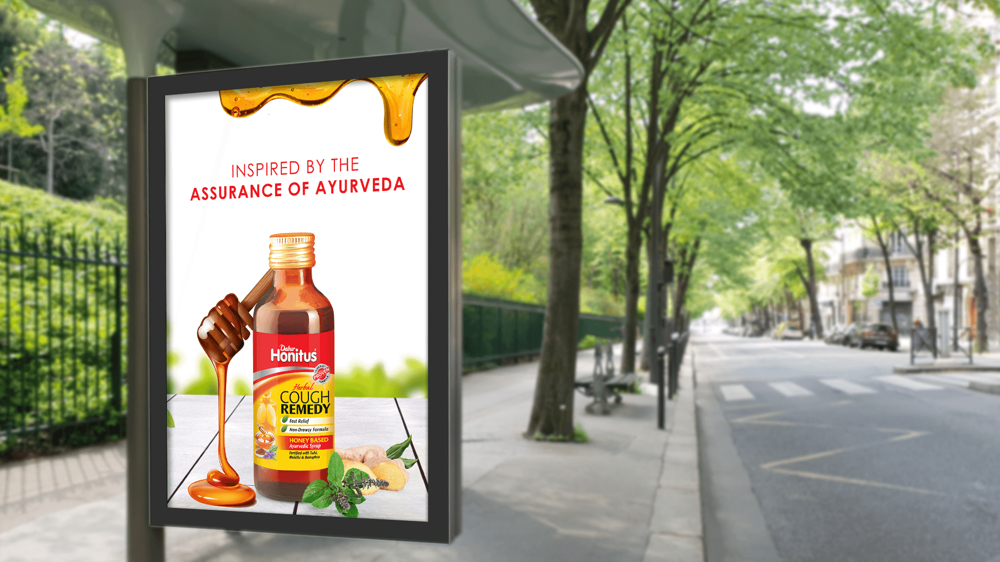

The message needed to communicate trusted relief and Ayurvedic formulation without overwhelming a fast-moving outdoor audience.
← Back to workAyurveda reassures.
Dabur Honitus · Outdoor Print
Ayurveda reassures.
Relief comes forward.

Project overview
A trusted remedy.
A clear street signal.
Dabur Honitus is a honey-based Ayurvedic cough syrup fortified with ingredients including Tulsi, Mulethi and Banapsha.
The outdoor direction brings that reassurance into one legible composition: the bottle establishes the remedy, honey communicates the formulation base and recognisable herbs make the Ayurvedic story visible.
- Product
- Cough Remedy
- Foundation
- Honey + Herbs
- Expression
- Trusted + Clear
- Application
- Outdoor Print
The communication challenge
Feel dependable.
Never feel clinical.
Honey and herbs had to soften the medicinal category while keeping the bottle and product purpose unmistakable.
The creative device
Honey draws the eye.
Herbs complete the proof.
The dipper and long honey stream create the visual entry point, guiding attention naturally toward the Honitus bottle.
Ginger, tulsi and supporting herbs sit at product level, converting an abstract Ayurvedic claim into visible formulation cues.
The fast-read system
Remedy. Base.
Assurance.
- 01
The bottle
The pack remains the central and most recognisable product signal.
- 02
The honey
The flowing dipper communicates the formulation’s familiar honey base.
- 03
The herbs
Visible ingredients connect the remedy to its Ayurvedic foundation.
The work in context
One assured idea.
Two outdoor settings.
Each supplied application appears once and remains fully visible, preserving the complete bottle, honey device, herbs and environmental context.


The outcome
A remedy made clear.
A tradition made current.
The final system balances medicinal recognition with natural warmth, allowing the Honitus bottle, honey base and Ayurvedic credentials to resolve in a single glance.
Category clarity
The bottle and label keep the cough-remedy role immediate.
Natural reassurance
Honey and herbs make the formulation story approachable.
Outdoor strength
A restrained white field protects visibility across settings.
Relief made recognisable.Ayurveda made visible.
Need a product message that reassures at a glance?